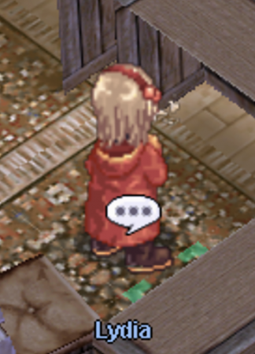
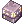

Poring Coins System
uaRO: World of Your Dream introduce Poring Coins System
Each monster on our server drops  Poring Coin with a 5% chance.
Poring Coin with a 5% chance.
You can also get them for completing various in-game quests and participating in events.
Poring coins are not tied to an account or a character, you can sell them, exchange them with other players or just throw them away xD.
Contents¶
- Poring Coins drop changes
- Where to exchange Poring Coins
- List of items that can be exchanged for Poring Coins
- Consumable items
Poring Coins drop changes¶
PC drop decreased from mobs:


PC drop removed from mobs:
- Hydra
- Thief Bug Egg
- Peco Peco Egg
- Ant Egg
- Blue Plant
- Green Plant
- Yellow Plant
 White Plant
White Plant- Shining Plant
- Black Mushroom
 Red Mushroom
Red Mushroom
Where to exchange Poring Coins¶
Poring Coins can be exchanged for you by Lydia, she is in the main office of Prontera.

List of items that can be exchanged for Poring Coins¶
Consumable items¶
| Item Name | Description | Cost |
|---|---|---|
 Field Manual 100% Field Manual 100% |
A manual that explains the effective way of the battle. It is a very detailed and well composed manual. Exp rate is increased to 100% for 30 minutes. | 40 |
| Bubble Gum | Sweet, tasty bubble gum. Item drop rate +100% for 30 minutes. | 700 |
| LV10 Blessing Scroll | A scroll in which a single use of Level 10 Blessing has been recorded. Caution-- This item won't work while your character is casting a spell or skill. | 2 |
| LV10 Agi Scroll | A scroll in which a single use of Level 10 Increase AGI has been recorded. Caution-- This item won't work while your character is casting a spell or skill. This item consumed 15HP and will be ineffective if the character has fewer than 15 HP. | 2 |
| Kafra Card | A Kafra name card issued by the Kafra Headquarters. Open kafra storage. | 20 |
|  Kafra Card 10 Box | A box containing 10 Kafra Name Cards. Kafra Name Card - summons the Kafra Service when used. | 200 |
| Blessing Scroll 10 Box | A box containing 10 Level 10 Blessing Scrolls. Once this item is purchased, termination of contract is impossible. Also, this item is not refundable. | 200 |
| Increase Agility Scroll 10 Box | A box containing 10 Level 10 Increase Agility Scrolls. Once this item is purchased, termination of contract is impossible. Also, this item is not refundable. | 20 |
 Dead Branch 10 Box Dead Branch 10 Box |
A box containing 10 Dead Branches that evokes an impending sense of danger. | 50 |
 Bloody Branch Bloody Branch |
An ancient, gnarled branch with a contract written in blood upon the bark that can summon stronger creatures than regular Dead Branches. Using it summons 1 Boss monster. | 300 |
 Gym Pass Gym Pass |
A visit will increase your skill level by 1 boosting your weight capacity by 200 per level. To a maximum of level 10. Increase Carrying Weight skill has 10 levels, and once learned, it is permanent. It is reset once you transcend. | 70 |
| Giant Fly Wing 50 Box | A light box containing 50 Giant Fly Wings. Giant Fly Wing - Allows to teleport many people at once to random areas when used by party master. | 30 |
| Gym Pass 10 Box | A box containing 10 Gym Membership Cards. | 700 |
| Infinite Flywing | The wings cut from fly to be made into enchanted item. Enables character to move to random spot on map. | 700 |
| Speed Potion 10 Box | A box containing 10 Speed Potions. | 5 |
| Life Insurance | If the character dies within the 30 minutes duration, no loss of EXP will be made. Corrected display supposed to be will not lose any experience the first time you KO'ed. | 3 |
| Medium Life Potion | A small bottle of Yggdrasil Tree Sap that is effective in healing wounds. For 10 minutes, you regenerate 7% of your Maximum HP every 4 seconds. Can not be used while in Frenzy. | 15 |
| Medium Life Potion 10 Box | A box containing 10 Large Life Potions. For 10 minutes, you regenerate 7% of your Maximum HP every 4 seconds. Can not be used while in Frenzy. | 150 |
| Regeneration Potion | A magic potion made with alchemy and magic. A Rosary is rumored to be one of the secret ingredients in making this potion. For 30 minutes, the recovery amount from all heal, recovery items, and Sanctuary is increased by 20% on your character. | 15 |
| Regeneration Potion 10 Box | A box containing 10 Regeneration Potions. | 150 |
| Tyr's Blessing | Increases ATK & 20 MATK for 5 minutes. HIT + 30, Flee Rate + 30 | 25 |
| Convex Mirror | A clean convex mirror that can be used to detect the appearance of Boss Monsters exists in the map. If the Boss Monster exists, its location will be indicated on the mini-map during the active duration of this item. Lord of the Dead, boss monsters in the Bio Lab, Ktullanux, Memory of Thanatos and some other event MVP monsters can not be detected by using this item. | 20 |